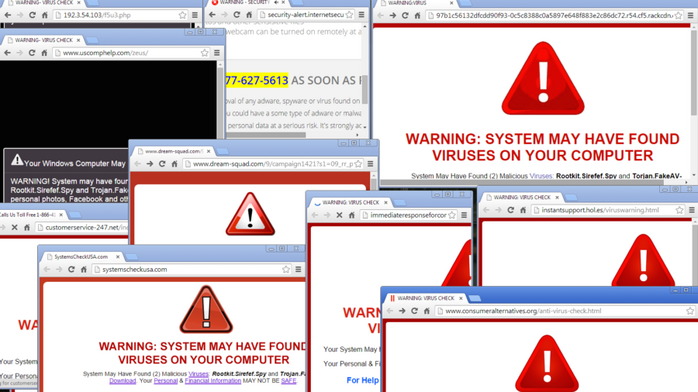

As the name suggests, computer network defense is a set of actions that a body/group takes to make sure that there is no unauthorized activity within its computer network. It is basically the defensive side of Cyber warfare. A successful defense strategy prevents any attacks and exploits.
Attacks include lots of possibilities ranging from taking down systems, to modifying the data on a system, to misusing resources – basically anything that affects the availability and/or integrity of a system can be called an attack. Exploits, on the other hand, affect the confidentiality of a system. If data is stolen or published, then that would fall under the exploit category.
We shall start our discussion of defense with the three things EVERY computer user should definitely be doing to every system they use.
1 Patch Updates
1.1 The need for Updates
Because systems are designed by humans, there are ALWAYS vulnerabilities being found and/or misused. As we discussed earlier in the quarter, a vulnerability exists in the “wild” for about 342 days on average before being discovered. During this time, nefarious characters can use those vulnerabilities to carry out attacks on a system. After the vulnerability is discovered, it will take time to design and then publish a fix for that vulnerability. During this phase, information on the vulnerabilities and how they can be misused is typically exchanged by bad actors. After a patch is fixed, it is still up the the user to download and/or install that patch and from your personal experience, you know that that might take a long time. As users of these systems, we have very little control over the time it takes to identify and fix a vulnerability. However, we do have control over how long it will take up to download and install that update. Until the patch is installed, all users aware of the vulnerability can use it to attack your system.
Bottom line is – install security updates as soon as possible.
1.2 The process of updating
For a linux system, the process of manually updating your system involves 4 commands. You should find a way of carrying out these commands as regularly as you can without it significantly affecting your system availability.
sudo apt update # get the latest software inventory
sudo apt upgrade # based on the inventory, make any updates to
# software I have on my system
sudo apt dist-upgrade # sometimes there might be some low level
# software that needs upgrading too.
sudo apt auto-remove # remove old software or installation files
# that are no longer being used.The first two commands shown above are the most important. The upgrade command will take some time if its been a while since your last upgrade.
2 Malware Protection
“Malicious Software” or malware is an all encompassing word for any software designed explicitly to exploit or attack a system. There are a few different types/kinds of malware in existence. However it is important to realize that while these types might have different definitions, there are multiple examples of malware that could be classified under multiple categories.
Viruses: Small piece of code inserted into seemingly innocuous application or system and are typically deployed by the victim themselves. Easily spreads to other files on that system and can do things such as destroy data, steal data, send infected files to contact lists, launch other attacks on other victims.
Worms: Very similar to viruses but do not need human interaction to make a copy of itself and doesn’t need to attach itself to a specific program to cause damage. Worms can be transmitted via email attachments, removable media, etc.
Bacteria: This is another name for the fork bomb (or rabbit virus) similar to the one you saw earlier in the quarter. This is a program that when run takes over system resources by replicating itself. This typically results in slower systems, or even crashing the system which might seem like a small price for a personal computer but is a very high price for other systems that run equipment that should never be off.
Trojans: A virus that masquerades as a benign program in order to persuade a victim to install it.

Rootkits: Software that helps cyber criminals or other malware to remain hidden. They will do things like grant access of the system to cyber criminals, hide evidence of such access, etc. They don’t typically cause serious damage to the system directly but they make it easier for other software or people to do so.
Spyware: Spyware’s purpose – as the name suggests – is to spy on the user of the system. They will do things like track internet or system activity for any sensitive information e.g. passwords.
Adware: Malware that supports advertising. Sometimes this will look like pop-up ads. Adware also typically is used to provide data on your system usage to its designer. Not all adware is malicious but they can definitely be annoying.
Ransomware: Malware that locks and/or encrypts a user’s system and requires a payment (usually in bitcoin) to regain access to the system.
While there are lots of types of malware, they are all typically transmitted in a similar manner and that allows us to either avoid them or mitigate their effect. Some reports say up to 94% of malware was delivered by email. Other ways include manual exploitation of security vulnerabilities, drive-by downloads, social engineering (phishing, vishing, smishing, etc.)
Email use demo: cf ./emailspam/*
In groups of 3-4, read over the provided emails and identify answers to the following questions:
What kind of attack is this?
Are there signs that you can see to identify that this is in fact an attack? or that it is legitimate?
What kind of vulnerabilities (in the cyber and physical realms) does this kind of attack need to be successful?
How can you defend against this kind of attack?
Some of the tell-tale signs that your system has malware include: slow or crashing system, little to no storage space, emails being sent without consent, pop-ups, programs being opened, closed or modifying data on their own, etc.
How does one protect themselves against malware? The only fool proof way is to never go on the internet and never use a removable device. But that is too high a price to pay. A more realistic price is being vigilant. At the beginning of class, we mentioned how the weakest link in any cyber security system is the human being and this is one of the reasons. CISA (Cybersecurity and Infrastructure Security Agency) is pushing for everyone to activate two factor authentication and that is a very good solution to most of the issues. If a piece of software requires access to both your phone and your computer to send an email with malicious attachments, then that reduces the likelihood of your system sending malware to someone else.
That might stop easy transmission of malware from one victim to another, but it doesn’t stop a victim from getting it for themselves. Being skeptical and vigilant can help one avoid suspicious links, websites, and emails. Another way is to tinker with your spam folder settings so that emails promising you free ipads will never show up in your inbox to begin with.
Patch updates. We have already talked about this but it is worth mentioning here again. The success or failure of a downloaded piece of malware will depend on whether you have the appropriate updates or not.
Installing and updating anti-malware software is another very important thing one can do to defend against malware. Do your research and find the software that fits within your budget and does what you want it to do.
A final possible fall back is maintaining backups of your data. If all else fails, at the very least you can format your system and restore the data you have backed up and only lose a few hours or a few days of data and not everything. This is a good habit to have for more than just avoiding malware.
3 Firewalls
This is the third thing everyone should be doing. Firewalls stop active cyber criminals from accessing your system or your home network. They also stop malware on your system or network from communicating and therefore propagating to other systems and/or their designer.
There are two dominant schools of thought on how a firewall might be set up. Windows comes with a default firewall that blocks connections to and from the outside world depending on the application that created that connection. You have to select which applications can connect and which ones cannot. One downside of this is that you have to interact with the firewall a little more since you have to change the settings for any software you want to use that requires an internet connection.
Linux approach to firewall is to block connections based on the port that those connections are using. As you might know from previous classes, every computer can connect to the internet over 65,536 ports (\(2^{16}\)). the first 1024 of those are system ports and are typically used for common services e.g. HTTP on port 80, FTP on 20 and 21, SSH on 22, IMAP on 143, etc. The rest of the ports dynamic and can be used for any connections you would like. Later on in this class, you will set up a linux firewall in an ingenious way to lock out all connections that do not know about a “secret knock” of yours.
3.1 Installing UFW
The commands below will install a basic firewall on your linux system using Uncomplicated FireWall a.k.a. UFW
sudo apt update
sudo apt install ufw #or “sudo apt install gufw” if you are a noob3.2 Blocking all incoming traffic
We shall now set up some basic rules to your firewall to keep out all incoming traffic.
sudo ufw enable
sudo ufw default deny incoming
sudo ufw status verbose # this just shows the status of the firewallThe commands above turn on the firewall, set it up to deny any incoming traffic, and then show its current status.
But what is the point of having a computer that can never connect to the internet?
3.3 Allowing traffic from a specific service
Let’s allow a specific network service – SSH.
sudo ufw allow sshThe command above will now allow ssh connections to your computer. Feel free to test this out by running the command below on another computer, or in a different terminal window. If you are doing this from another computer e.g. a neighbour’s computer, or your host Machine (assuming the ssh target is your Virtual Machine), then you’ll have to replace localhost in the commands below with the appropriate IP address.
Any of the commands below will do the same thing i.e. log into your computer using ssh
ssh <username>@localhost # replace username with the computer username
ssh localhost # if you are already using the username account
ssh -p <portnumber> <username>@localhost # if its a non-traditional port3.4 Removing a rule from your Firewall
Generally speaking, adding allow rules will look like what we did in the previous subsection. Routinely, however, you will need to remove a rule you put into your firewall. There are a couple of ways you could do this.
If you know what the rule/service name is, you could just remove it using that service name.
sudo ufw delete allow sshOr if you cannot remember exactly, you can list out all the rules and delete the rule corresponding to a specific line number.
sudo ufw status numbered
sudo ufw delete <rule_number>3.5 Denying traffic from a specific source
You can also deny traffic from a specific ip address or ip range
sudo ufw deny from ip.ad.re.ss
sudo ufw deny from ip.ad.re.ss/24 # deny from a subnet3.6 Turning off your firewall
In case you want to turn off your firewall (and suspend any rules you might have set up), use the command below
sudo ufw disableYou can find more UFW commands and examples at 1.
4 Other Defenses
While the three techniques we discussed above should be required for all systems, they are not 100% infallible especially since we are dealing with humans – myself included. There are times when it would be helpful and beneficial to implement other defensive strategies.
4.1 Virtualization
One of the techniques you have already used from the last class is virtualization. As you discussed in that class, this allows you to isolate a portion of your computer and install a completely separate system on it. This is the approach most people will use when they have to deal with inherently risky files (e.g. studying viruses), or connect to risky networks. This allows you to have explicit control over what kinds of files might be corrupted or affected by nefarious characters. It also allows you to easily revert to an older snapshot of your computer if something goes awry.
The only con is you need to be technically savvy and spend a lot of time to set up and maintain a virtual machine especially if the default settings don’t work for you. Also, because it is only allowed to access part of your original system e.g. less RAM, it can be slow and cumbersome to work with.
4.2 Chroot jails
Another way of isolating or restricting access for users of a system is using chroot jails. As background, when you open a file manager in linux, you are typically put in the home folder. Most of a person’s usual work will be based at home. However, if you go two levels up you get to the root folder and this is the grandparent of all files on the system. You can find files used to boot the computer (boot), programs installed on the computer (bin), all devices connected to the computer (dev), etc. Understandably this is a lot of information that anyone who logs into your computer might have access to. A way to deal with this is to create a chroot jail. The name chroot comes from “change root” which essentially means that you change the root folder for some users. This allows you to create a small subsystem of folders that that user has access to and can never get out of. Setting up a chroot jail even means that you determine what programs and utilities the user will be able to access in their jail e.g. can they use ls, mkdir, etc.
You will discuss and set up chroot jails later on in this class. For those of you who have been trying out bandit, this is probably one of the ways that that system is set up since you cannot see any folders other than what the designer of the system gives you access to.
Setting chroot jails up takes way less system resources than virtualization and is quicker but the jail will have the same OS as the host and a subset of the tools installed on the host.
4.3 Docker containers
Docker containers are a recent entry into the isolation game. They allow users to set up environments with operating systems, and software that are portable to other users and systems and serve to give users an isolated environment that has been set up and tested by someone else. It reduces the amount of work that the end user will have to do to get their computer set up to tackle a task.
Isolation software or approaches aren’t the only way to defend against attacks online. Unfortunately, there are way too many approaches to discuss in this class but I hope that this has introduced you to a few of the main ones that anyone can use on their own systems and perhaps even some enterprise systems.
5 Basic Offence
Sometimes a good defense is based on understanding the capabilities of the offence. Unfortunately, the offense is always growing and wrapping your mind round all the possibilities is a daunting task. Nonetheless, let us discuss a couple of things that are commonly done during an offense i.e. recon/footprinting tactics.
To look for vulnerabilities (a process done by both attackers and defenders of a network) some tools can be used. Nmap is probably the most common but others include nemesis, python-scapy, netcat, telnet. For many of these tools, there is some overlap in what they do but the more you work with them, the more you’ll get a feeling for which tools work best in what situation. Familiarity with the tool and its capabilities is one of those factors that will also affect your choice of tool.
$ sudo apt install nmap
$ nmap <address or address range>
$ nmap -h # to see some of the options
$ nmap -Pn <address>
$ nmap -O <address>Another offensive operation is network sniffing. This involves just looking at network traffic and then figuring out more specific targets based on that. The most common tool is wireshark.
This is supposed to be small preview of a few tools. We shall dive deeper into some of them in later lectures. But now that you have heard about them, nothing stops you from taking a look at a few of them on your own time.
References:
- https://www.sciencedirect.com/topics/computer-science/computer-network-exploitation
- https://www.sciencedirect.com/topics/computer-science/computer-network-attack
- https://www.sciencedirect.com/topics/computer-science/computer-network-defense
- https://us.norton.com/internetsecurity-malware-types-of-malware.html#ransomware
Footnotes
(https://www.digitalocean.com/community/tutorials/ufw-essentials-common-firewall-rules-and-commands)↩︎